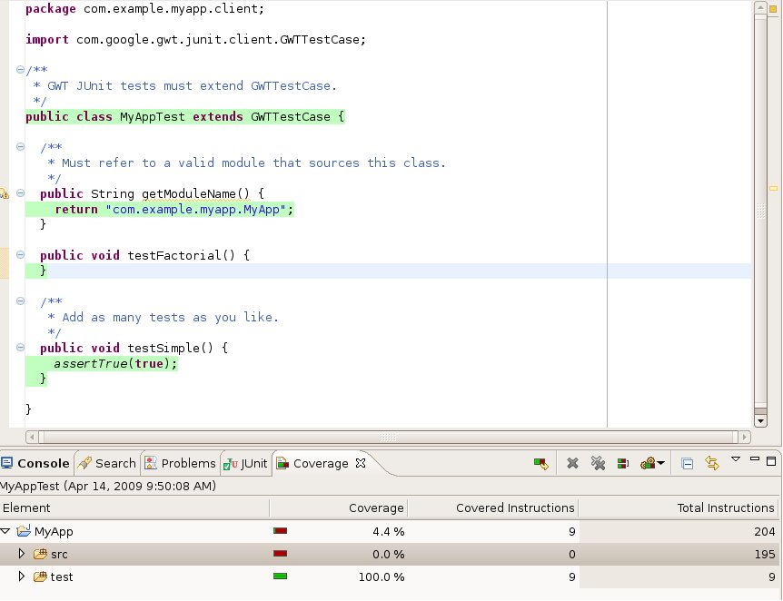
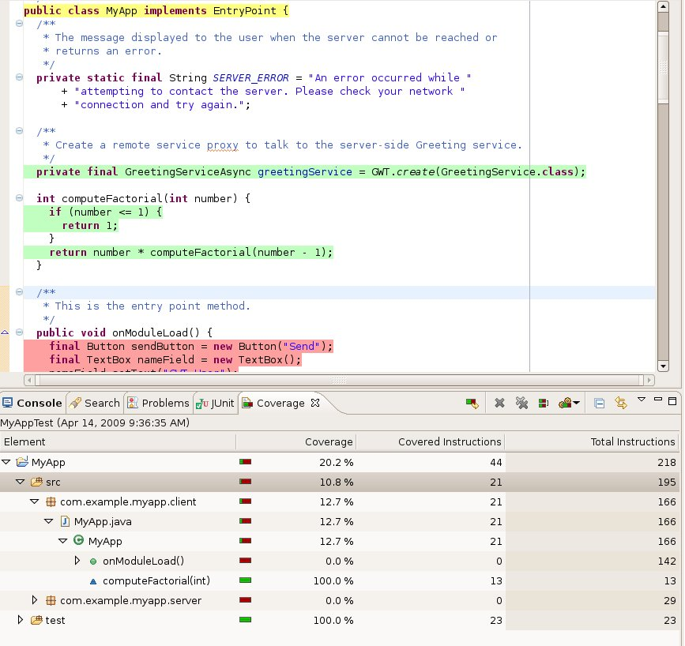

Except as otherwise noted,
the content of this page is licensed under the Creative Commons
Attribution 3.0 License.
Google Code offered in: English - Español - 日本語 - 한국어 - Português - Pусский - 中文(简体) - 中文(繁體)
For measuring code coverage, GWT supports EMMA, a widely used code coverage tool for Java code. To be able to interact with other EMMA tools, GWT uses EMMA in offline mode — that is, GWT uses classes instrumented by EMMA over the classes it obtains by compiling the Java source files.
We offer two ways of measuring code coverage: (i) using the EclEmma plugin in Eclipse and (ii) using command-line tools. For both techniques, use the EMMA jar from GWT's download page — it includes a patch so that EMMA does not throw away the coverage data if the same class is loaded by different classloaders, as is common in GWT.
As a running example, let us say we create a project with the provided webAppCreator and junitCreator tools as:
./webAppCreator -out myapp
-junit ../../../../gwt-tools/lib/junit/junit-3.8.1.jar
com.example.myapp.MyApp
Add the following computeFactorial() method to MyApp.java and the dummy testFactorial() method to MyAppTest.java
int computeFactorial(int number) {
if (number ≤ 1) {
return 1;
}
return number * computeFactorial(number - 1);
}
public void testFactorial() {
}
This example is used in the following sections.
Confirm that there is a "Coverage" block in the Run menu.
Follow instructions for running tests in Eclipse
To get coverage data, select the configuration from the Coverage tab and click "coverage." In the screenshot below of the Eclipse window, you can see that the src folder has zero coverage (0 covered instructions of 195 instructions) whereas the test folder has 100% coverage (9 covered instructions). When you run it, your numbers might be different because we keep updating the starter application generated by webAppCreator. Note that these instructions are bytecode instructions; EclEmma maps them back to Java source code wherever possible. EclEmma highlights lines with colors:
This result is expected because, by default, the MyAppTest.java file does not exercise any of the application code. It has a simple test that returns true.

Augment the MyAppTest.java by creating the testFactorial method:
public void testFactorial() {
assertEquals(1, new MyApp().computeFactorial(0));
}
On running coverage, now we see that out of 13 instructions in the method computeFactorial (the figure below shows the total instructions in the computeFactorial method), 5 instructions are covered. (Note that these instructions are bytecode instructions.) Let us add another statement to testFactorial() for testing the factorial computation for numbers greater than 0 such that the method becomes:
public void testFactorial() {
assertEquals(1, new MyApp().computeFactorial(0));
assertEquals(2, new MyApp().computeFactorial(2));
}
On running coverage, now we see that coverage for the computeFactorial() method is indeed 100% as expected. The following screenshot of the Eclipse window shows the final coverage information. You can drill down on the individual class and methods to find the coverage information at the desired granularity. You can also export the coverage data to html or xml formats to keep track of your code coverage over time.

Since GWT requires a patched version of EMMA, use the EMMA jar from GWT's download page. Getting coverage results requires these steps:
(The yellow text is the output of the tool. For convenience, we copied the patched EMMA jar as emma.jar in the current directory.)
cd myapp # step i: generate the class files ant devmode # step ii: use emma to instrument the class files, creates a coverage.em file java -cp emma.jar emma instr -m overwrite -cp war/WEB-INF/classes/com/example/myapp/client EMMA: processing instrumentation path ... EMMA: instrumentation path processed in 231 ms EMMA: [5 class(es) instrumented, 0 resource(s) copied] EMMA: metadata merged into [PARENT_DIR/samples/com/example/myapp/coverage.em] {in 17 ms} # step iii: run the test code after putting the modified emma.jar in the classpath; generates a coverage.ec file ant test.dev EMMA: collecting runtime coverage data ... .. Time: 12.968 OK (2 tests) EMMA: runtime coverage data merged into [PARENT_DIR/samples/com/example/myapp/coverage.ec] {in 22 ms} # step iv: generate the coverage report HTML file java -cp emma.jar emma report -r html -in coverage.em,coverage.ec EMMA: processing input files ... EMMA: 2 file(s) read and merged in 13 ms EMMA: writing [html] report to [PARENT_DIR/samples/com/example/myapp/coverage/index.html] ...
Follow Step 4 of the EclEmma section to improve coverage. As you add more tests, you can see your coverage increasing.